Alternance - Analyse des mouvements de patients au sein du GHT
Mission
Analyser les flux de patients entre les établissements du Groupement Hospitalier de Territoire (GHT) afin d'identifier les incohérences de codage liées aux transferts inter-établissements.
Travail réalisé
- Jointure par IPP (Identifiant Patient Permanent)
- Filtrage avec le préfixe du numéro d'hospitalisation SB% (Saint-Brieuc)
-
Formules de détection des transferf via variable créer :
=SI([Date sortie] = [Date entrée]; "Identique"; "Différente")
- Architecture modulaire (1 requête/établissement)
Livrables
- 4 Onglets "Modes d'entrée erronés" (par établissement source)
- 4 Onglets "Modes de sortie erronés" (par établissement cible)
- 1 Module dédié aux PIE (Prestations Inter-Établissements)
- Actualisation hebdomadaire
Extraits des rapports
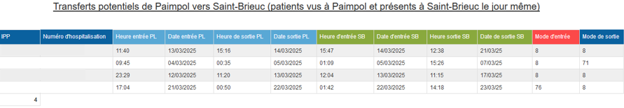

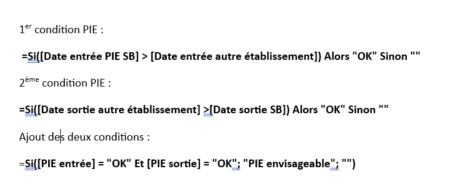
Bilan
Apports techniques
- Maîtrise avancée de WEBPIMS
- Automatisation des contrôles PMSI
- Modélisation des flux patients GHT
Impact financier
- Identification de 100% des transferts mal codés
- Permet l’exhaustivité du codage du service
- Outil réutilisable par tous les établissements
SAÉ 201 - Conception, implémentation et alimentation d'une base de données
Problématique
Informatiser la gestion d'une entreprise de distribution.
Travail réalisé
- Modélisation des tables
- Définition des relations
- Implémentation avec IBeasy+ et Looping
Livrables
- Rapport
- Base de données Access
- Dictionnaire de données Excel
- Graphe des dépendances
Schémas de conception
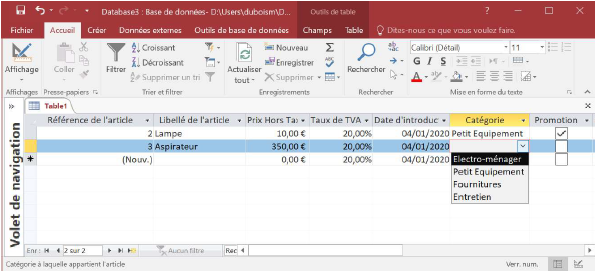
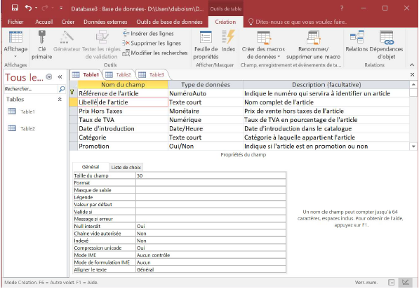
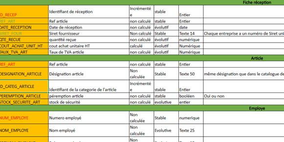
SAÉ 202 - Création de reporting depuis une base de données relationnelle
Problématique
Créer des reportings à partir de données stockées dans un SGBD relationnel (données IMDB 2020).
Travail réalisé
- Requêtes complexes
- Création de graphiques
- Connexions inter-logiciels
Livrables
- Description des tables (Excel)
- Base Access avec requêtes
- Reporting Excel avec graphiques
- Rapport d'analyse
Visualisations des données
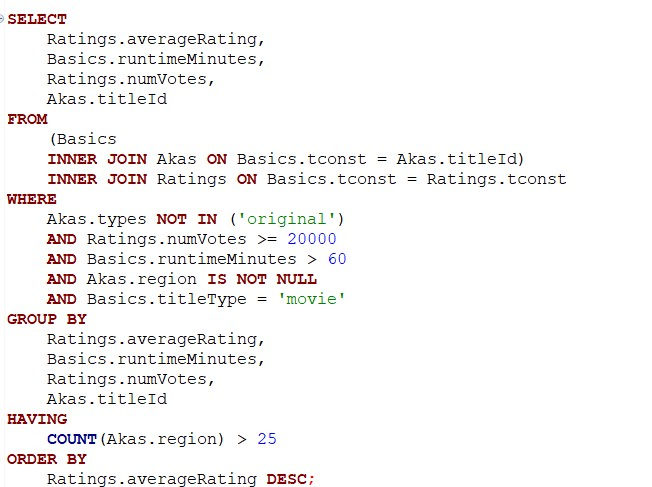
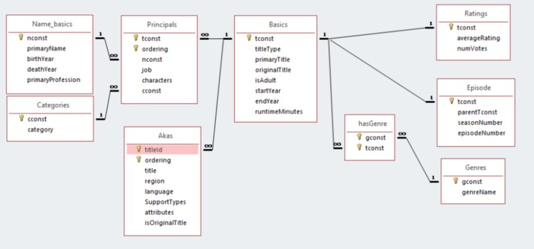
SAÉ 206 - Création d'un outil décisionnel pour un établissement de santé mentale
Problématique
Conception d'un outil interactif pour visualiser et analyser l'activité d'un établissement public de santé mentale (EPSM) à partir de données complexes d'hospitalisation et d'actes ambulatoires.
Travail réalisé
- Importation et nettoyage de fichiers texte complexes
- Développement d'une macro VBA pour le prétraitement
- Création de visualisations interactives (graphiques, tableaux)
- Implémentation d'un système de filtres avancés
- Respect des contraintes de confidentialité
Livrables
- Script VBA d'importation des données
- Application Shiny (ui.R, server.R, global.R)
- Documentation utilisateur
- Dictionnaire de données
L'application
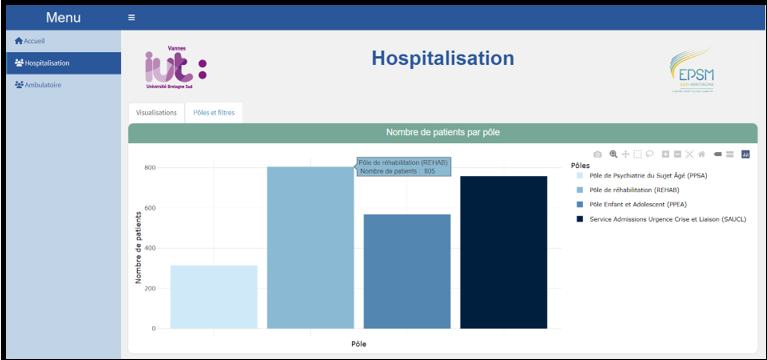
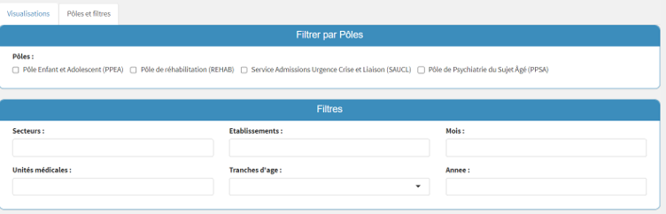
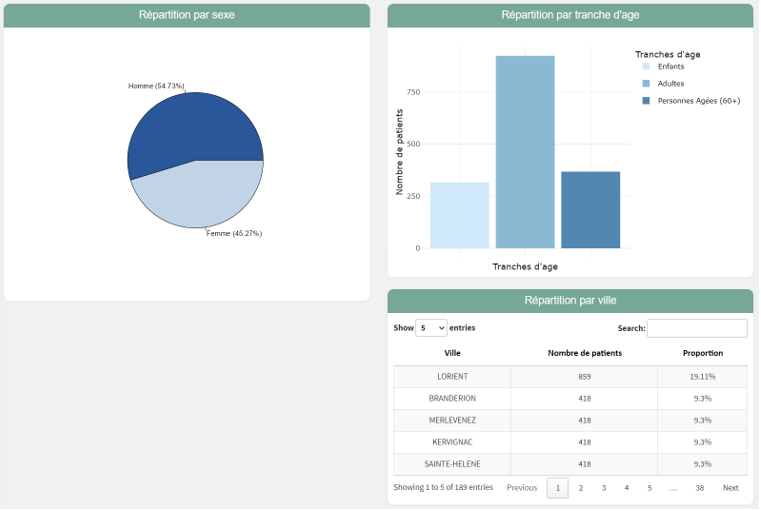
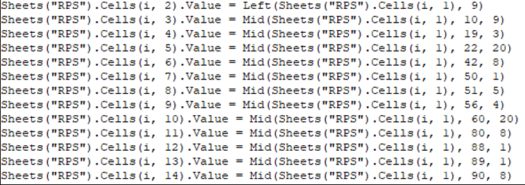
Méthodologie
Compréhension des données
- Analyse des fichiers sources (RAA et RPS)
- Étude des documents complémentaires (CIM-10, guide méthodologique)
- Création d'un dictionnaire de données
Prétraitement
- Développement d'une macro VBA pour l'importation
- Nettoyage et transformation des données
- Création de variables calculées
Conception de l'application
- Architecture en 3 pages (accueil, hospitalisations, ambulatoire)
- Définition des indicateurs clés
- Choix des visualisations adaptées
Développement
- Implémentation des filtres interactifs
- Création des graphiques avec Plotly
- Tests et validation des fonctionnalités
Compétences développées
Datathon - Optimisation du bénéfice lié à la vente de bière
Problématique
Optimiser le bénéfice généré par la vente de bières en proposant une stratégie de référencement personnalisée pour chaque bar, basée sur l'analyse de son environnement concurrentiel.
Travail réalisé
- Clustering des bars (60 clusters) basé sur des variables stratégiques
- Analyse de la concurrence locale (distance mer, nombre de voisins à 1km)
- Identification du meilleur concurrent
- Recommandations personnalisées (top 3 bières, top 3 fûts)
- Stratégie adaptée à chaque cluster de clients
Livrables
- Dashboard de suivi des indicateurs de performance
- Matrice de positionnement concurrentiel
- Préconisations stratégiques par cluster
- Présentation des résultats et de la méthodologie
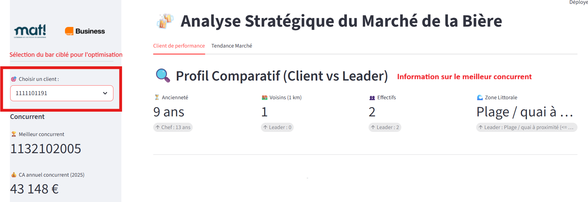
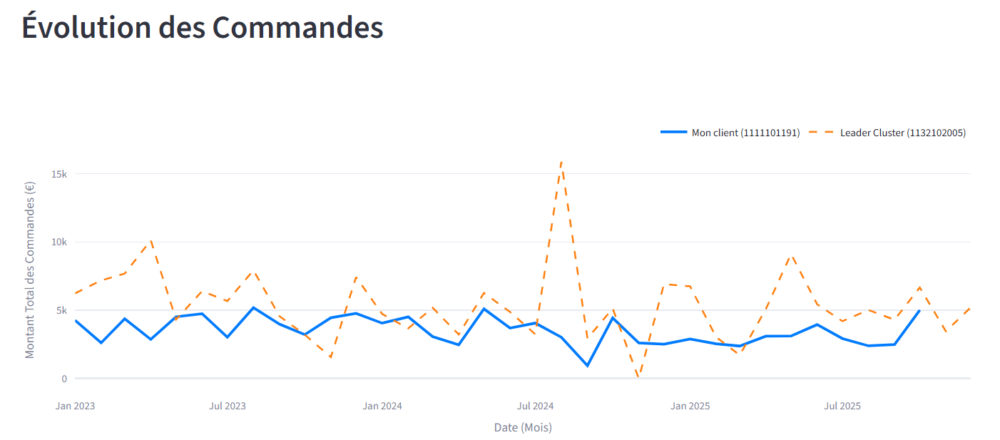
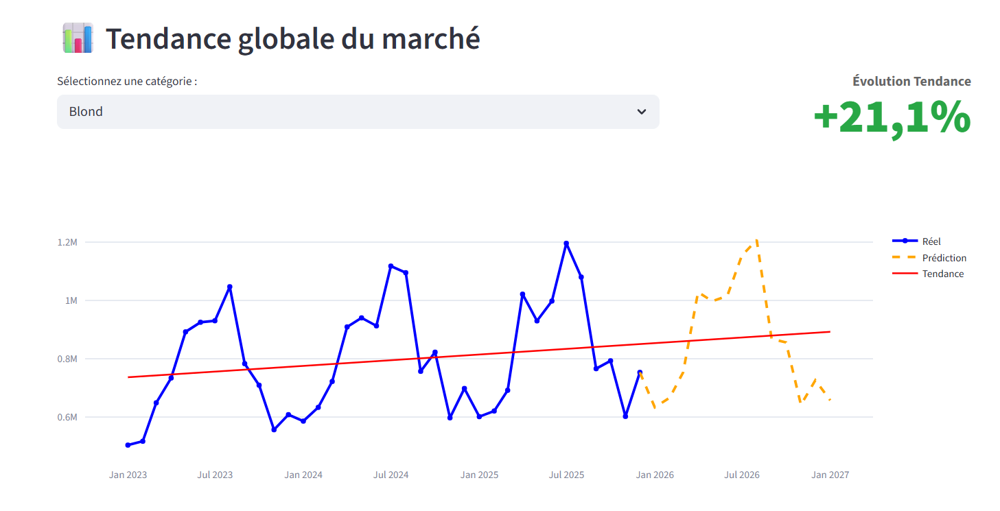
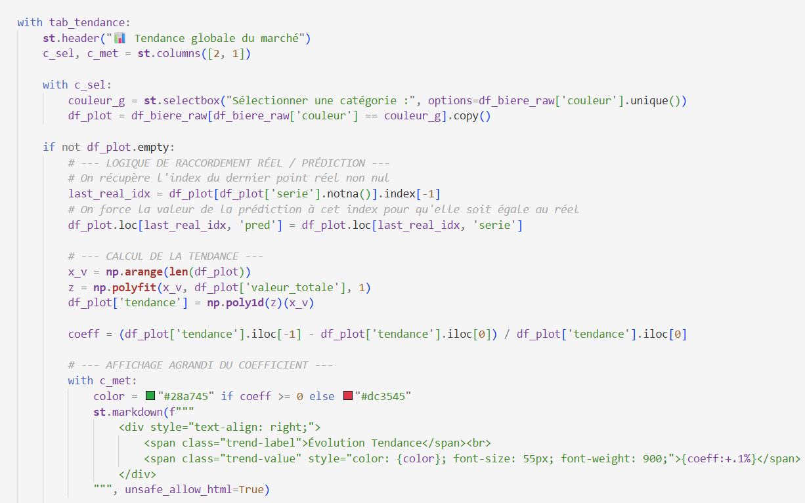
Méthodologie
Clustering géographique
- Segmentation des 1 568 bars en 60 clusters
- Variables : distance mer, nombre voisins 1km, zone littorale
- Caractéristiques : ancienneté, nombre de becs, familles de bière
Analyse concurrentielle
- Identification du meilleur concurrent proche
- Analyse des prix moyens et de l'offre disponible
- Analyse des corrélations entre variables
Personnalisation de l'offre
- Recommandation top 3 bières par cluster
- Recommandation top 3 fûts adaptés
- Optimisation du prix selon la concurrence
Stratégie déployée
- Proposition personnalisée par bar
- Ajustement du référencement produit
- Suivi des performances post-déploiement
Compétences développées
SAÉ 402 - Création d'un outil d'analyse marketing pour un supermarché
Problématique
Développement d'une application interactive pour analyser le comportement des clients achetant des produits "premium" et optimiser les campagnes marketing ciblées.
Travail réalisé
- Nettoyage et préparation des données de transactions
- Segmentation des clients acheteurs de produits "premium"
- Analyse du comportement d'achat (fréquence, montant)
- Analyse multivariée (ACP et clustering)
- Recommandations marketing personnalisées
Livrables
- Application Shiny (ui.R, server.R, global.R)
- Tableau de bord interactif avec indicateurs clés
- Profils types de clients acheteurs "premium"
- Proposition de stratégie marketing
L'application
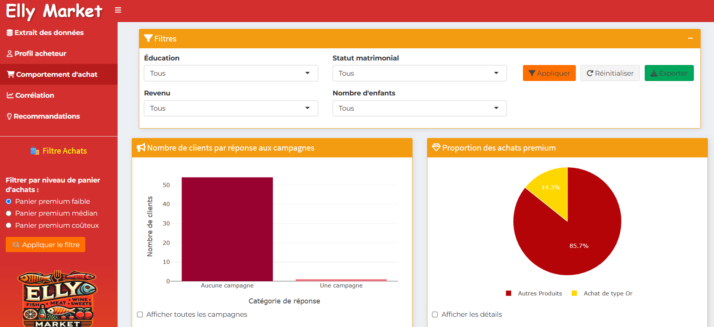
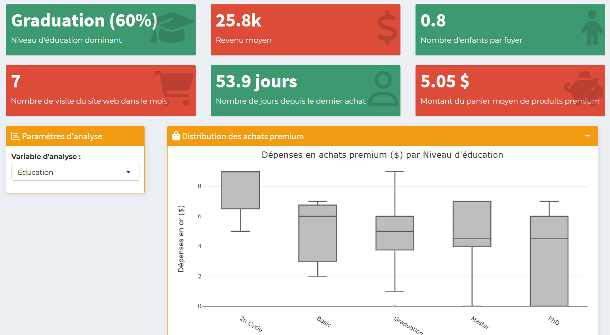
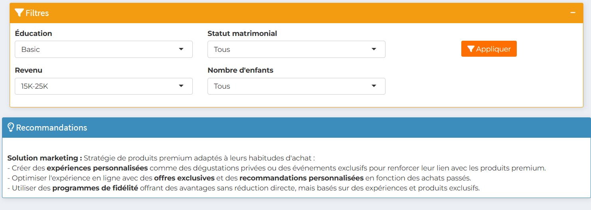
Méthodologie
Analyse exploratoire
- Identification des variables clés
- Statistiques descriptives sur les produits "premium"
- Analyse des corrélations
Segmentation
- Classification des clients par comportement
- Analyse des paniers moyens
- Identification des profils types
Analyse multivariée
- Réalisation d'une ACP
- Clustering hiérarchique
- Interprétation des axes factoriels
Stratégie marketing
- Proposition de campagnes ciblées
- Optimisation des promotions
- Personnalisation des offres
Compétences développées
Alternance - Analyse de complications post-transfusionnelles
Problématique
Identification des complications post-transfusionnelles non déclarées par croisement de données entre le système transfusionnel INLOG et le DPI E-Roz.
Méthodologie
-
Sources :
INLOG (transfusions) × E-Roz/MEDIS (urgences) -
Technique :
Jointure sur IPP après normalisation -
Critères :
Patients transfusés (J-1/J0) puis venus aux urgences -
Défi :
Formats disparates entre les systèmes
Process R Studio
# Normalisation IPP
df_transfusion$IPP <- str_pad(df_transfusion$IPP, 9, pad = "0")
# Jointure et calcul délai
result <- inner_join(df_transfusion, df_urgences, by = "IPP") %>%
mutate(delai = as.numeric(difftime(date_urgences, date_transfusion, units = "days"))) %>%
filter(delai %in% c(0, 1)) %>%
distinct(IPP, .keep_all = TRUE)
# Export Excel
write_xlsx(result, "complications_transfusionnelles.xlsx")Processus technique
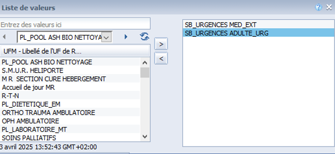
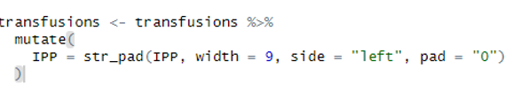
Résultats & Bilan
Résultats concrets
- Liste exhaustive des cas suspects OAP
- Détection de sous-déclarations
- Base pour améliorer l'hémovigilance
Acquis professionnels
- Maîtrise des jointures complexes dans R
- Gestion des formats hétérogènes
- Communication inter-métiers
Compétences développées
SAÉ 301 - Analyse d'accidentologie routière (2018-2022)
Problématique
Analyse des facteurs démographiques influençant la fréquence et gravité des accidents routiers en France (2018-2022) à travers un outil Power BI interactif pour la prévention routière.
Modèle de données
-
4 tables principales :
Caractéristiques • Usagers • Véhicules • Lieux -
Relations :
Clés primaires/étrangères optimisées -
Hiérarchies :
Tranches d'âge • Catégories usagers • Types de routes
Transformations
-
DAX avancé :
Calcul âge • Format dates • Regroupements -
Nettoyage :
Variables codées traduites (25+ colonnes) -
Optimisation :
Suppression variables non pertinentes
Dashboard
-
3 pages :
Accueil • Temporelle • Gravité -
Filtres croisés :
Sexe • Âge • Catégorie • Année -
Responsive :
Adapté à tous devices
Démonstration visuelle

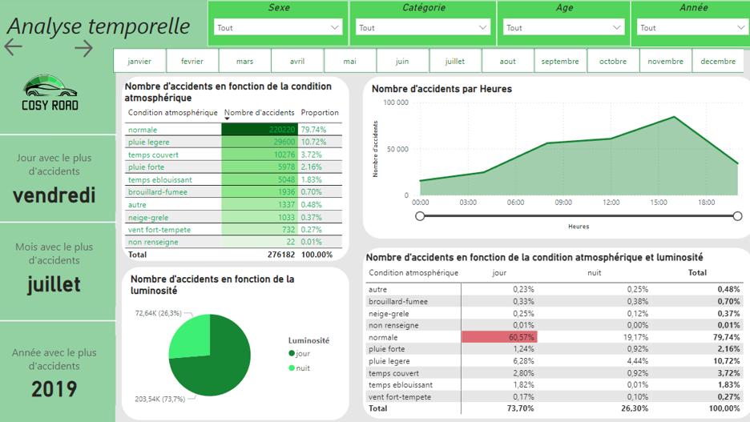
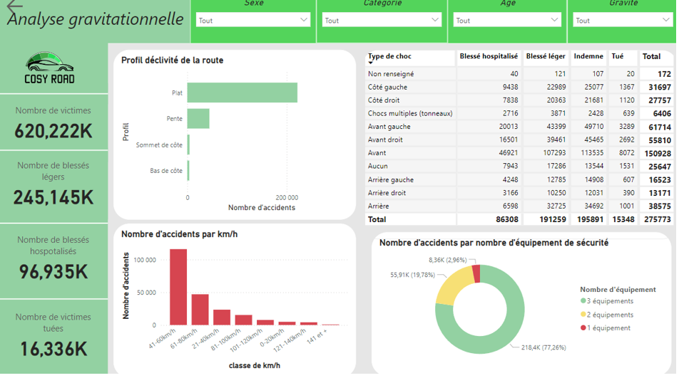
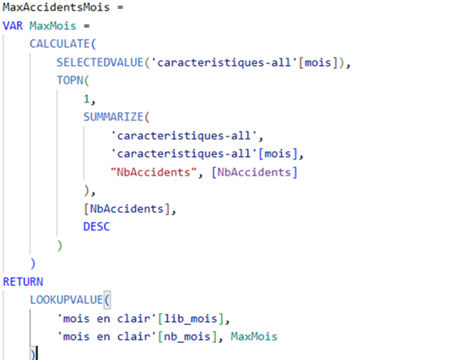
Méthodologie
Exploration
- Analyse du fichier BAAC (ONISR)
- Validation des sources 2018-2022
- Identification variables clés
Modélisation
- Création relations entre tables
- Normalisation des données
- Création hiérarchies
Transformations
- Traduction variables codées
- Calcul âge victimes
- Formattage dates/heures
Visualisation
- Graphiques adaptés
- Indicateurs clés
- Optimisation responsive
Compétences mobilisées
Alternance - Optimisation du pilotage du bloc opératoire
Contexte
Mise en place d'un outil de pilotage du bloc opératoire à partir du logiciel de bloc ADVANCE.
Solution
- Fusion planning prévisionnel utilisé par le bloc et le logiciel ADVANCE
- Indicateurs personnalisés en focntion des besoins de l'équipe
- Tableau de bord envoyé de manière hebdomadaire
Indicateurs
- 1 Taux d'occupation global
- 2 Taux de débordement
- 3 Taux de retard
- 3 Temps entre-patients
Illustrations
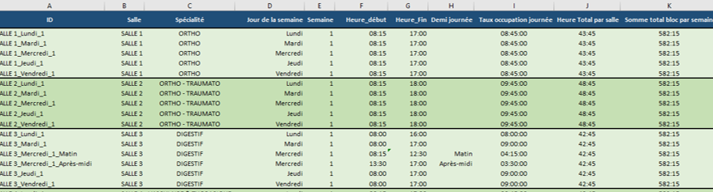
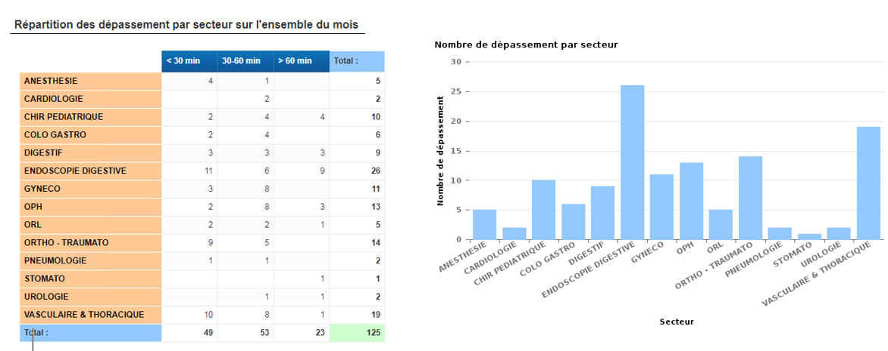
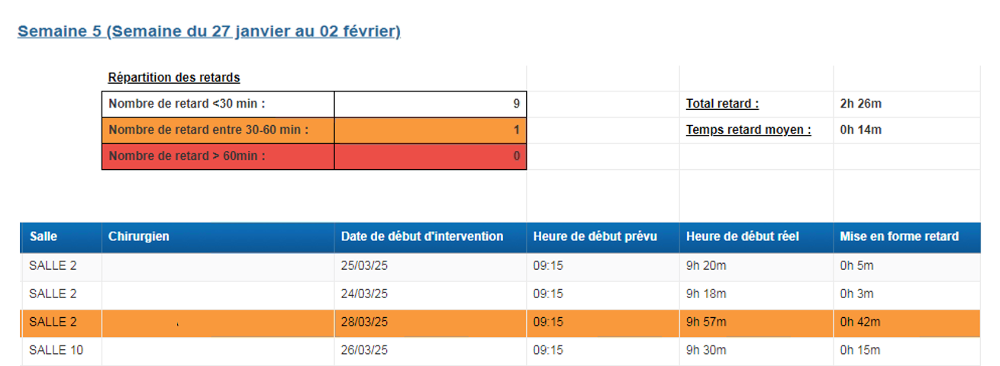
SAÉ 401- Régression linéaire multiple
Problématique
Comment expliquer et prédire la durée du sommeil à partir de données sociodémographiques, physiologiques et comportementales ?
Projet réalisé dans le cadre du module "Modèle linéaire" du parcours EMS.
Données
- Sociodémographie : âge, sexe, profession
- Mode de vie : activité physique, pas quotidiens
- Physiologie : IMC, fréquence cardiaque, tension
- Sommeil : durée, qualité, troubles
Résultats clés
- 1Qualité du sommeil
- 2Activité physique
- 3Niveau de stress
- 4Fréquence cardiaque
Méthodologie
Préparation des données
- Nettoyage des valeurs manquantes
- Recodage des variables qualitatives
- Séparation pression artérielle
- Normalisation des variables
Analyse exploratoire
- Statistiques descriptives
- Visualisations interactives
- Matrice de corrélations
- Identification outliers
Modélisation
Modèle complet
- 13 variables initiales
Modèle optimisé
- 7 variables retenues
- Sélection AIC/BIC
Validation
- Test de colinéarité (VIF)
- Analyse des résidus
- Test d'homoscédasticité
- Comparaison AIC/BIC
Interprétation
- Coefficients standardisés
- Importance relative
- Intervalles de confiance
- Prévisions profils types
Résultats visuels
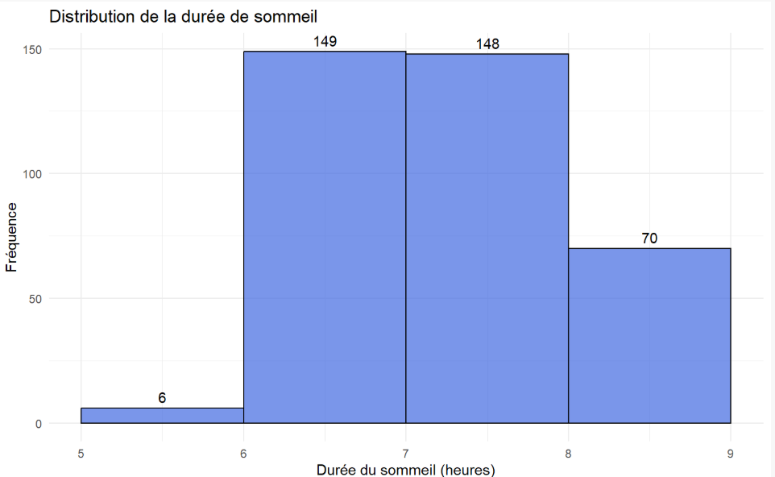
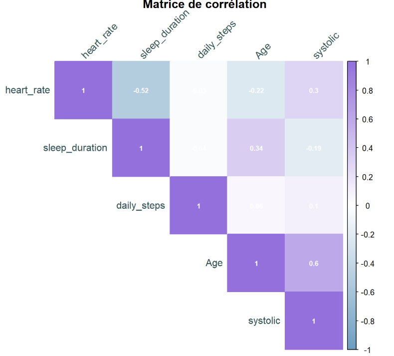
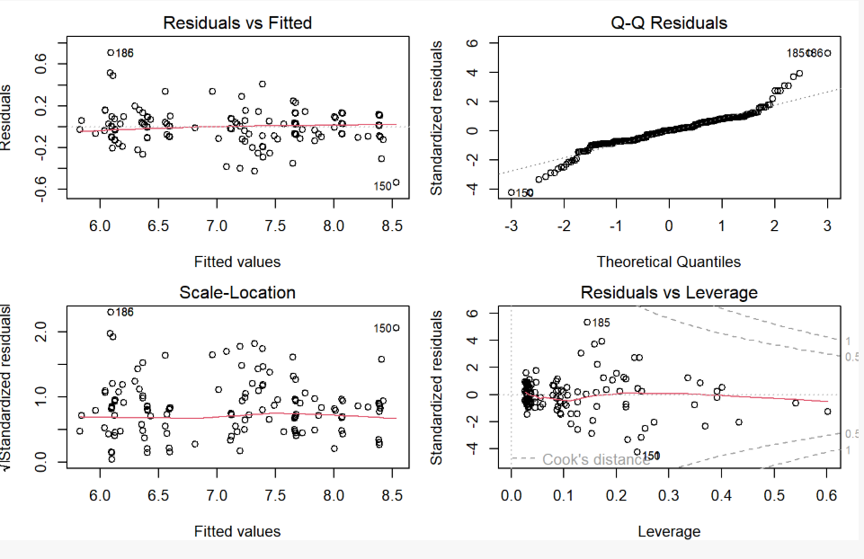
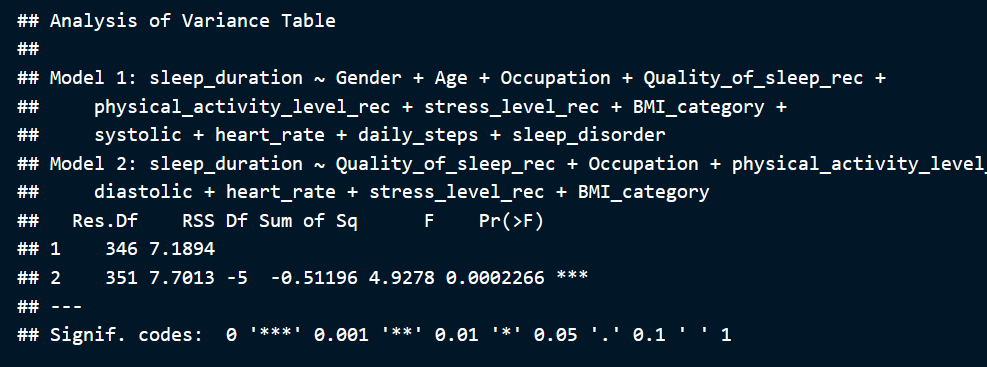
Compétences mobilisées
- Préparation avancée des données
- Modélisation statistique
- Validation des hypothèses
- Interprétation des résultats
- Visualisation des données
- Communication scientifique
Alternance – Évaluation du dispositif Plateforme d'Orientation Patient(POP)
Problématique
Comment évaluer l’impact du dispositif POP sur la durée moyenne de séjour et les réhospitalisations à 30 jours ?
Étude réalisée au Centre Hospitalier de Saint-Brieuc en collaboration avec l’HAD du Pays Briochin. Dispositif expérimental mis en place de 2021 à 2024 permettant de sécuriser et de coordonner les sorties hospitalières jugées complexes.
Données
- Fichiers RSS MCO (2021–2024)
- Formulaires e-Roz (POP)
- Données urgences (MEDIS)
- Création de variables d'appariement à travers les codes CIM-10 : Score de Charlson, facteurs sociaux-environnementaux
Résultats clés
- 1Complexité clinique plus élevée dans le groupe POP
- 2Réhospitalisation à 30 jours ≈ 18 % (Non significatif)
- 3Pas de différence significative de survie (log-rank)
Méthodologie
Préparation des données
- Nettoyage RSS / e-Roz
- Pseudonymisation CNIL
- Gestion des doublons
- Construction population POP
Création variables
- Score de Charlson
- Facteurs socio-environnementaux
- Entrée urgences
- Variables cliniques PMSI
Appariement
- Score de propension (glm)
- Nearest neighbors
- Ratio 1:2 POP / non-POP
- SMD pour validation
Analyse
- DMS
- Réhospitalisation à 30 jours
- Kaplan-Meier
- Modèle de Cox
Résultats visuels
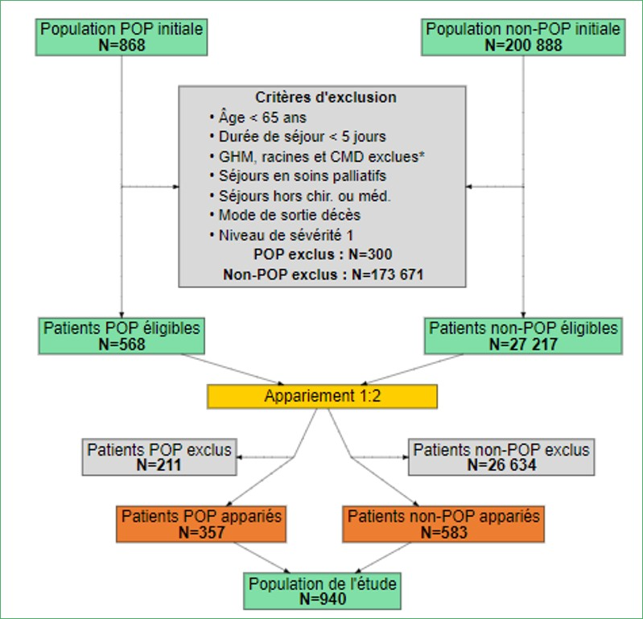
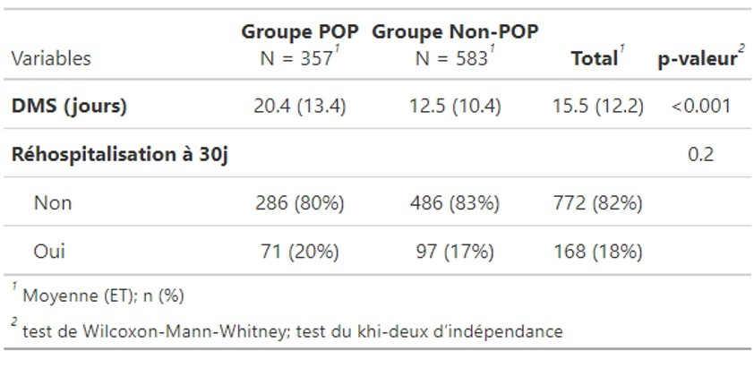
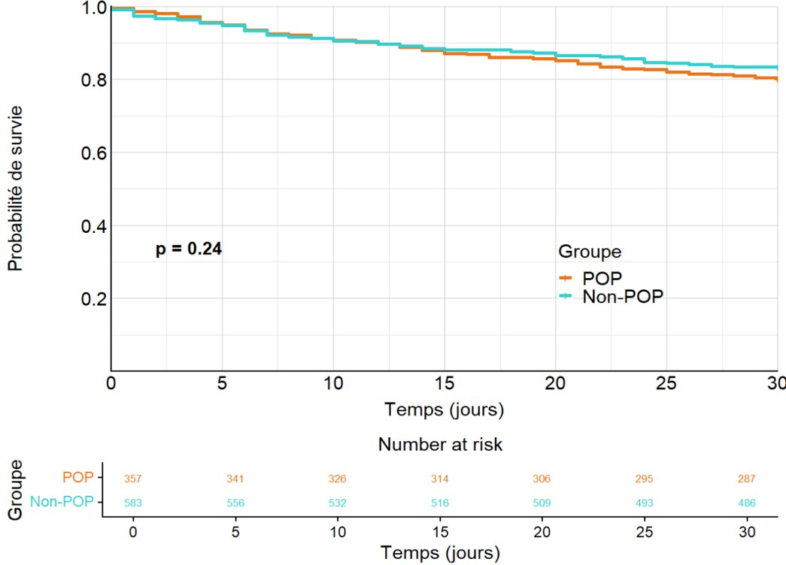
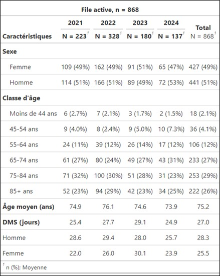
Compétences mobilisées
- Nettoyage et structuration de bases PMSI
- Analyse de cohorte appariée
- Score de propension
- Analyse de survie
- Interprétation statistique avancée